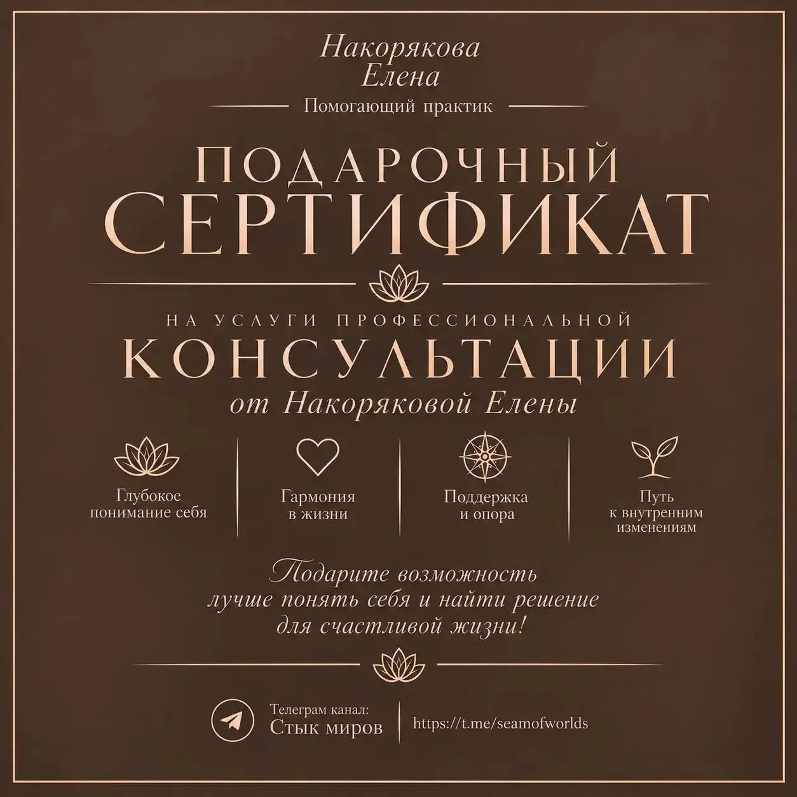

Помогающий практик
Бережные консультации для тех, кто устал от тревоги, хочет понять себя и найти решения для счастливой жизни. Без осуждения и готовых шаблонов.
Чувство, что вы живете не свою жизнь или потеряли ориентиры
Постоянная тревожность, усталость и ощущение «выжатого лимона»
Сложно принимать решения, и вы сомневаетесь в каждом шаге
Отношения с собой и близкими приносят больше боли, чем радости
Если вы узнали себя хотя бы в одном пункте — вы на верном пути. Вместе мы найдем вашу внутреннюю опору.
Помогающий практик. Моя миссия — создавать безопасное и безоценочное пространство, в котором вы сможете услышать себя, разобраться в сложных чувствах и найти верные решения.
В своей работе я опираюсь на современный подход psy2.0. Это значит, что мы не просто разбираем прошлое, а учимся выстраивать контакт с собой здесь и сейчас. Я не даю готовых советов — я помогаю вам самим найти ту самую опору, которая приведет к счастливой и осознанной жизни.
«Я не даю рыбку, а даю удочку. Моя цель — не сделать вас зависимыми от терапевта, а научить вас слышать себя и справляться с жизненными вызовами самостоятельно».
В классической психологии часто принято долго искать причины проблем в детстве. Подход psy2.0 работает иначе — он направлен на решение и будущее, а не на бесконечный анализ прошлого.
Вместо того чтобы спрашивать «Почему со мной это происходит?», мы задаем вопрос «Как мне получить желаемое и жить так, как я хочу?». Это более бережный, экологичный и быстрый путь к изменениям.
Мы ищем ваши сильные стороны, а не концентрируемся только на недостатках.
Фокус на конкретных действиях и результатах, а не на годах терапии.
Бережное отношение к вашей психике и телу, без насилия над собой.
Глубокий и бережный подход к каждому запросу
Работа с самооценкой, поиск истинных желаний, выявление внутренних блоков. Помогаю услышать свой истинный голос.
Настройка баланса между разумом, телом и эмоциями. Снятие тревожности и возвращение ощущения внутреннего покоя.
Помощь в прохождении сложных жизненных периодов и кризисов. Безопасное пространство для принятия важных решений.
Пошаговое движение к новой, более осознанной жизни. Формирование новых привычек и стратегии личностного роста.
Игровая практика для глубокого самопознания. Позволяет мягко обойти защитные механизмы психики и найти ответы на важные вопросы.
Работа в безопасном круге единомышленников. Помогает увидеть ситуацию со стороны, получить поддержку и новый опыт взаимодействия.
Прозрачный путь от первого шага до результата
Вы оставляете заявку на сайте или пишете мне в мессенджер.
Мы созваниваемся, обсуждаем ваш запрос и выбираем удобный формат.
Индивидуальная встреча, игра или групповая работа в безопасной обстановке.
Вы получаете ясность, инструменты для решения и план дальнейших действий.
Истории людей, которые уже сделали шаг к себе
Елена помогла мне разобраться в себе, когда я совсем запуталась. Атмосфера на консультации была настолько безопасной, что я смогла рассказать о том, что скрывала даже от себя.
Обратился с запросом "не знаю, чего хочу от жизни". Вместо нравоучений Елена задавала глубокие вопросы, которые помогли мне самому найти ответы.
После серии консультаций наконец-то ушла тревожность, с которой я жила годами. Чувствую себя намного спокойнее и счастливее.

Ищете идеальный подарок для близкого человека? Подарочный сертификат на консультацию — это возможность подарить заботу, внимание и путь к гармонии.
Сертификат можно приобрести на любую сумму или на конкретную услугу. Он станет бережным знаком внимания для того, кто вам дорог.
Узнать стоимостьОставьте заявку, и я свяжусь с вами для обсуждения деталей